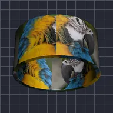

Yüzük

Katmanı düz yüzlü bir yüzüğün çevresine sarar; kısa bir boru gibi, ışık ve derinlikle.
Ayarlar
| Ayar | Tür | Aralık | Varsayılan |
|---|---|---|---|
| Yön α | Açı | -3600° – 3600° | 0° |
| Yön β | Açı | -3600° – 3600° | 0° |
| Yön γ | Açı | -3600° – 3600° | 0° |
| X Dönüşü | Açı | -3600° – 3600° | 0° |
| Y Dönüşü | Açı | -3600° – 3600° | 0° |
| Z Dönüşü | Açı | -3600° – 3600° | 0° |
| Yarıçap | Sayı | 0 – 100000 | 100 |
| Genişlik | Sayı | 0 – 100000 | 10 |
| Uzunluk | Sayı | 0 – 100000 | 50 |
| Yumuşatma | Sayı | 0 – 1 | 0 |
| Konum | Nokta (X, Y) | -100000 – 100000 | 0, 100 |
| Konum Z | Sayı | -100000 – 100000 | 600 |
| Ölçek | Sayı | 0.01 – 100 | 1 |
| Işık yoğunluğu | Sayı | 0 – 10 | 1 |
| Parlama | Sayı | 0 – 1 | 0.8 |
| Yansıma | Sayı | 0.1 – 500 | 30 |
| Ortam | Sayı | 0 – 1 | 0.1 |
| Renk | Renk | – | #FFFFFF |
| Yön | Nokta (X, Y) | -100000 – 100000 | 75, -75 |
| Yükseklik | Sayı | -100000 – 100000 | 100 |
| Ayna | Açık veya kapalı | – | Kapalı |
| X tekrarı | Sayı | 0.01 – 100 | 1 |
| Y tekrarı | Sayı | 0.01 – 100 | 1 |
| Doku açısı | Açı | -3600° – 3600° | 0° |
| Kırp | Sayı | 0.01 – 100 | 1 |